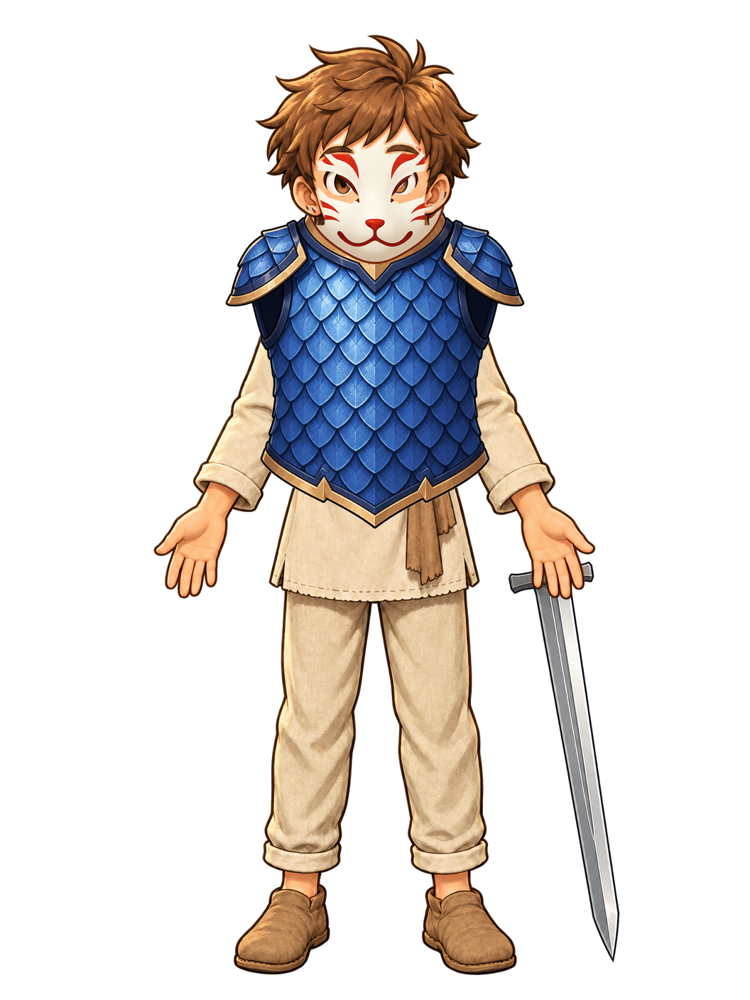

Apprentice · Full loadout
Universal overlays with one reusable Apprentice hair-front mask.
Go Odyssey · Wave 2 · Gate 2 · P2 · Review Prototype
Can one normalized player body frame carry functional equipment across different character silhouettes without redrawing every item for every character? This review-only prototype tests exactly three approved characters and three existing functional-equipment identities. It does not change Hero, Backpack, combat, ownership, effects, or Production.
player_appearance.character_key; ownership and equipped state remain player_inventory / player_inventory.equipped; effects remain server EQUIPMENT_DEFS. The renderer has no gameplay authority and performs no API or database writes.
Universal overlays with one reusable Apprentice hair-front mask.
One wearable drawing per equipment ID + body-frame family. The 256×256 inventory icon remains item-presentation art and is not enlarged into the character renderer.
Per-character transforms stay within small anchor/scale adjustments. Each character contributes one reusable front-hair mask; no item-specific character redraw is present.
Visual projection consumes an authoritative equipped state only. It cannot grant ownership, Attack, Defense, rarity, effect strength, Premium, Coins, or payment entitlement.
| Character | Equipment | Result | Alignment | Depth / occlusion | Collision / floating | Mobile | Identity |
|---|---|---|---|---|---|---|---|
| Apprentice | iron_sword | FAIL | Open hand; no grip formed | Base hand in front | No body collision | PASS | PASS |
| Apprentice | dragon_scale | PASS | Torso / shoulders aligned | Front cuirass | No floating | PASS | PASS |
| Apprentice | fox_mask | PASS | Face / eye openings aligned | Hair-front mask | No hair clipping | PASS | PASS |
| Mage | iron_sword | FAIL | Open hand; no grip formed | Behind sleeve and body | No robe collision | PASS | PASS |
| Mage | dragon_scale | PASS_WITH_MINOR_OFFSET | −4% common-overlay scale | Reusable side-hair mask | Robe remains readable | PASS | PASS |
| Mage | fox_mask | PASS | −9% common-overlay scale | Reusable fringe/side-hair mask | No separate mask art | PASS | PASS |
| Paladin | iron_sword | FAIL | Open hand; no grip formed | Base hand in front | No armor collision | PASS | PASS |
| Paladin | dragon_scale | PASS_WITH_MINOR_OFFSET | +3.5% common-overlay scale | Chest harness over base clothing | No suppression required | PASS | PASS |
| Paladin | fox_mask | PASS | −6% common-overlay scale | Reusable hair-front mask | No helmet collision | PASS | PASS |
| Apprentice | full loadout | PASS_WITH_MINOR_OFFSET | All anchors close | Layer stack coherent | No floating | PASS | PASS |
| Mage | full loadout | PASS_WITH_MINOR_OFFSET | Small common transforms | One reusable hair mask | Robe remains visible | PASS | PASS |
| Paladin | full loadout | PASS_WITH_MINOR_OFFSET | Small common transforms | Armor-on-clothing stack | No base suppression | PASS | PASS |
Every cell renders the same 1056×1408 master into the same 300×400 review box. Character size is never changed to hide clipping.
The hand-held row is a failure reference; the waist and back rows use one universal sheathed iron_sword overlay at equal scale.
{kind=link}
{kind=link}